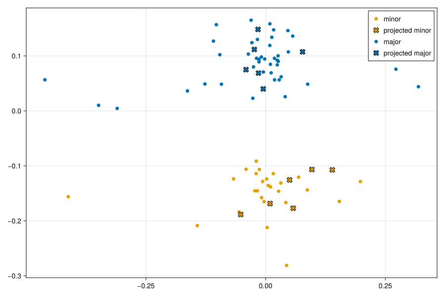
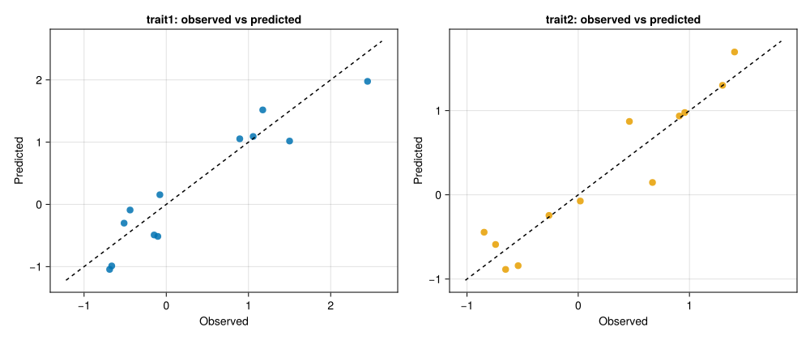

Projection and Prediction
After fitting an NCPLS model with fit, you can apply it in two main ways:
- Use
projectto map new samples into the latent score space defined by the fitted model. - Use
predictto generate predicted responses from new predictor arrays.
project(mf, Xnew) returns a matrix with one row per new sample and one column per latent component. In predict(mf, Xnew, A), A::Integer is the requested number of latent components to use, with 1 ≤ A ≤ ncomponents(mf). The return value is a numeric array of size (n_samples, A, n_responses), where slice [:, a, :] is the cumulative prediction based on the first a components. This means that even predict(mf, Xnew, 1) returns a three-dimensional array with one component slice rather than a plain matrix.
For classification-capable fits, NCPLS provides two decoding layers on top of predict:
onehot(mf, Xnew, A)oronehot(mf, predictions)converts the final requested component slice to a one-hot class matrix.predictclasses(mf, Xnew, A)orpredictclasses(mf, predictions)maps those class scores back to class labels.
For mixed response blocks such as [class indicators | continuous traits], predict still returns the full numeric response block, while onehot and predictclasses automatically use only the inferred class-response columns.
Once the model has been fitted, prediction-time calls need only new predictor data Xnew. Optional Yadd and obs_weights influence component extraction during fitting, but they are not required for project, predict, onehot, or predictclasses.
Example Data
The examples below reuse the synthetic multilinear dataset introduced on the Fit page. We hold out six samples from each class and fit the models on the remaining observations, so the same training and hold-out split can be reused across the projection, regression, discriminant, and hybrid examples.
using NCPLS
using Statistics
using CairoMakie
data = synthetic_multilinear_hybrid_data(
nmajor=48,
nminor=32,
mode_dims=(30, 20),
orthogonal_truth=true,
integer_counts=false,
class_component_strength=6.0,
regression_component_strength=5.5,
nuisance_component_strength=3.5,
x_noise_scale_clean=0.02,
x_noise_scale_noisy=0.10,
yreg_noise_scale_clean=0.02,
yreg_noise_scale_noisy=0.08,
yadd_noise_scale=0.02,
)
major_idx = findall(==("major"), data.sampleclasses_string)
minor_idx = findall(==("minor"), data.sampleclasses_string)
holdout_idx = vcat(major_idx[1:6], minor_idx[1:6])
train_idx = setdiff(collect(axes(data.X, 1)), holdout_idx)
X_train = data.X[train_idx, :, :]
X_holdout = data.X[holdout_idx, :, :]
Yadd_train = data.Yadd[train_idx, :]
obs_weights_train = data.obs_weights[train_idx]
labels_train = data.samplelabels[train_idx]
labels_holdout = data.samplelabels[holdout_idx]
classes_train = categorical(data.sampleclasses_string[train_idx])
classes_holdout = data.sampleclasses_string[holdout_idx]
plot_classes_holdout = "projected " .* classes_holdout
model = NCPLSModel(
ncomponents=2,
multilinear=true,
orthogonalize_mode_weights=false,
scale_X=false,
)
blue, orange = Makie.wong_colors()[[1, 2]]Projection
project maps new predictor arrays into the latent score space defined by a fitted model. Use it when you want latent coordinates for new samples, score plots that combine training and hold-out observations, or a projection step before downstream interpretation.
NCPLS.project — Function
project(mf::AbstractNCPLSFit, X::AbstractArray{<:Real}) -> Matrix{Float64}Compute latent component X scores by projecting new predictors X with a fitted NCPLS model. The predictors are centered and scaled using the stored preprocessing statistics and then multiplied by the unfolded score projection tensor R.
We first fit a discriminant model and then project the held-out samples into the score space defined by the training data.
mf_da = fit(
model,
X_train,
classes_train;
Yadd=Yadd_train,
obs_weights=obs_weights_train,
samplelabels=labels_train,
predictoraxes=data.predictoraxes,
)
heldout_scores = project(mf_da, X_holdout)
fig_da = Figure(size=(900, 600))
scoreplot(
vcat(labels_train, labels_holdout),
vcat(data.sampleclasses_string[train_idx], plot_classes_holdout),
vcat(xscores(mf_da), heldout_scores);
backend=:makie,
figure=fig_da,
axis=Axis(fig_da[1, 1]),
title="Projected hold-out samples",
group_order=["minor", "projected minor", "major", "projected major"],
default_marker=(; markersize=10),
group_marker=Dict(
"minor" => (; color=orange),
"projected minor" => (; color=orange, marker=:x, markersize=15, strokecolor=:black, strokewidth=1),
"major" => (; color=blue),
"projected major" => (; color=blue, marker=:x, markersize=15, strokecolor=:black, strokewidth=1),
),
show_inspector=false,
)
save("predict_projected_holdout.svg", fig_da)
The returned heldout_scores matrix has one row per held-out sample and one column per latent component. These coordinates live in the same score space as xscores(mf_da), so training samples and projected new samples can be plotted together directly.
Predicting Responses
predict returns the cumulative response predictions for the requested number of latent components. The return value is always numeric and always contains the full response block, even for discriminant or hybrid fits.
StatsAPI.predict — Function
predict(
mf::AbstractNCPLSFit,
X::AbstractArray{<:Real},
ncomps::Integer=ncomponents(mf)
) -> Array{Float64, 3}Predict the response matrix for each sample in X using the fitted NCPLS model. ncomps::Integer selects how many latent components to use, with 1 ≤ ncomps ≤ ncomponents(mf). The result has size (n_samples, ncomps, n_responses), where slice [:, a, :] contains the cumulative predictions formed from the first a components. The result is always numeric and always contains the full response block. Even for discriminant or mixed response fits, predict does not apply an argmax; use onehot or predictclasses when class labels should be decoded from a class-score sub-block.
For regression, the response block is interpreted as continuous variables.
mf_reg = fit(
model,
X_train,
data.Yprim_reg[train_idx, :];
Yadd=Yadd_train,
obs_weights=obs_weights_train,
samplelabels=labels_train,
responselabels=data.responselabels_reg,
predictoraxes=data.predictoraxes,
)
Yhat_reg = predict(mf_reg, X_holdout, 2)
holdout_reg = @view Yhat_reg[:, end, :]
trait_correlations = [
cor(holdout_reg[:, j], data.Yprim_reg[holdout_idx, j]) for j in axes(data.Yprim_reg, 2)
]
tensor_size=size(Yhat_reg)(12, 2, 2)holdout_correlations=collect(zip(data.responselabels_reg, round.(trait_correlations; digits=3)))2-element Vector{Tuple{String, Float64}}:
("trait1", 0.999)
("trait2", 0.971)fig_reg = Figure(size=(1000, 420))
for j in axes(data.Yprim_reg, 2)
observed = data.Yprim_reg[holdout_idx, j]
predicted = holdout_reg[:, j]
lo, hi = extrema(vcat(observed, predicted))
pad = 0.05 * (hi - lo + eps(Float64))
ax = Axis(
fig_reg[1, j],
title="$(data.responselabels_reg[j]): observed vs predicted",
xlabel="Observed",
ylabel="Predicted",
)
scatter!(ax, observed, predicted, color=(j == 1 ? blue : orange, 0.85), markersize=12)
lines!(ax, [lo - pad, hi + pad], [lo - pad, hi + pad], color=:black, linestyle=:dash)
end
save("predict_regression_holdout.svg", fig_reg)
The final matrix of predicted responses is the last component slice, Yhat_reg[:, end, :]. Earlier slices show the cumulative prediction after fewer latent components.
Decoding Class Predictions
For discriminant models, the raw output of predict remains numeric: it is a tensor of class scores, not a vector of labels. Use onehot when you want a one-hot class matrix and predictclasses when you want decoded class labels.
NCPLS.onehot — Method
onehot(mf::AbstractNCPLSFit, X::AbstractArray{<:Real}, ncomps::Integer=ncomponents(mf))Generate one-hot predictions from a fitted NCPLS model. Unlike CPPLS, NCPLS stores cumulative predictions along the component axis, so the last requested component slice is used directly.
NCPLS.onehot — Method
onehot(mf::AbstractNCPLSFit, predictions::AbstractArray{<:Real, 3})Convert NCPLS prediction tensors (samples, components, responses) into one-hot labels. For full NCPLSFit objects, NCPLS uses the inferred class-response block only, so mixed response fits of the form [class scores | continuous traits] are supported. The reduced NCPLSFitLight fallback uses the full response block and is intended mainly for internal cross-validation helpers on pure classification responses.
NCPLS.predictclasses — Function
predictclasses(mf::NCPLSFit, X::AbstractArray{<:Real}, ncomps::Integer=ncomponents(mf))
predictclasses(mf::NCPLSFit, predictions::AbstractArray{<:Real, 3})Map NCPLS predictions back to class labels using the inferred class-response block.
Yhat_da = predict(mf_da, X_holdout, 2)
predicted_da = predictclasses(mf_da, Yhat_da)
tensor_size=size(Yhat_da)(12, 2, 2)final_class_scores=round.(Yhat_da[1:4, end, :]; digits=3)4×2 Matrix{Float64}:
0.385 0.615
1.217 -0.217
0.977 0.023
1.844 -0.844hcat(labels_holdout, classes_holdout, predicted_da)12×3 Matrix{String}:
"1" "major" "minor"
"3" "major" "major"
"4" "major" "major"
"5" "major" "major"
"6" "major" "major"
"7" "major" "major"
"2" "minor" "minor"
"8" "minor" "minor"
"10" "minor" "minor"
"11" "minor" "minor"
"12" "minor" "minor"
"13" "minor" "minor"The final requested component slice is Yhat_da[:, end, :]. If you prefer one-hot class assignments instead of labels, use onehot(mf_da, Yhat_da) or the convenience wrapper onehot(mf_da, X_holdout, 2).
Hybrid Response Blocks
Mixed response models combine class-indicator columns and continuous targets in a single response block. The fitted model still uses predict for the full numeric response, but the class helpers automatically isolate the class block.
mf_hybrid = fit(
model,
X_train,
data.Yprim_hybrid[train_idx, :];
Yadd=Yadd_train,
obs_weights=obs_weights_train,
samplelabels=labels_train,
sampleclasses=data.sampleclasses_string[train_idx],
responselabels=data.responselabels_hybrid,
predictoraxes=data.predictoraxes,
)
Yhat_hybrid = predict(mf_hybrid, X_holdout, 2)
predicted_hybrid_classes = predictclasses(mf_hybrid, Yhat_hybrid)
predicted_hybrid_onehot = onehot(mf_hybrid, Yhat_hybrid)
predicted_hybrid_traits = @view Yhat_hybrid[:, end, data.regressioncols]
(;
tensor_size=size(Yhat_hybrid),
onehot_size=size(predicted_hybrid_onehot),
continuous_block_size=size(predicted_hybrid_traits),
class_accuracy=mean(predicted_hybrid_classes .== classes_holdout),
)(tensor_size = (12, 2, 4), onehot_size = (12, 2), continuous_block_size = (12, 2), class_accuracy = 0.9166666666666666)hcat(
labels_holdout,
classes_holdout,
predicted_hybrid_classes,
string.(round.(predicted_hybrid_traits[:, 1]; digits=2)),
string.(round.(predicted_hybrid_traits[:, 2]; digits=2)),
)12×5 Matrix{String}:
"1" "major" "minor" "2.59" "1.81"
"3" "major" "major" "-1.34" "-0.53"
"4" "major" "major" "-1.24" "-0.5"
"5" "major" "major" "-0.84" "0.15"
"6" "major" "major" "-1.27" "-0.43"
"7" "major" "major" "-0.16" "0.44"
"2" "minor" "minor" "0.08" "-0.56"
"8" "minor" "minor" "0.25" "-0.69"
"10" "minor" "minor" "-0.75" "-1.18"
"11" "minor" "minor" "0.65" "0.06"
"12" "minor" "minor" "-0.1" "-0.75"
"13" "minor" "minor" "2.18" "1.16"This illustrates the main downstream pattern for hybrid responses:
Yhat = predict(mf_hybrid, Xnew, 2)
class_labels = predictclasses(mf_hybrid, Yhat)
class_onehot = onehot(mf_hybrid, Yhat)
continuous_cols = data.regressioncols
continuous_targets = Yhat[:, end, continuous_cols]predict keeps the full response block intact, while predictclasses and onehot decode only the inferred class-response columns.